23 Modelos: conceptos básicos
23.1 Introducción
El objetivo de un modelo es proveer un resumen de baja dimensión de un conjunto de datos (o dataset, en inglés). En el contexto de este libro vamos a usar modelos para particionar los datos en patrones y residuos. Patrones fuertes esconderán tendencias sutiles, por lo que usaremos modelos para remover capas de estructuras mientras exploramos el conjunto de datos.
Sin embargo, antes de que podamos comenzar a usar modelos en conjuntos de datos interesantes y reales, necesitarás los conceptos básicos de cómo funcionan los modelos. Por dicha razón, este capítulo es único porque usa solamente datos simulados. Estos conjunto de datos son muy simples y no muy interesantes, pero nos ayudarán a entender la esencia del modelado antes de que apliques las mismas técnicas con datos reales en el próximo capítulo.
Hay dos partes en un modelo:
Primero, defines una familia de modelos que expresa un patrón que quieras capturar. El patrón debe ser preciso, pero también genérico. Por ejemplo, el patrón podría ser una línea recta, o una curva cuadrática. Expresarás la familia de modelos con una ecuación como
y = a_1 * x + a_2oy = a_1 * x ^ a_2. Aquí,xeyson variables conocidas de tus datos, ya_1ya_2son parámetros que pueden variar al capturar diferentes patrones.Luego, generas un modelo ajustado al encontrar un modelo de la familia que sea lo más cercano a tus datos. Esto toma la familia de modelos genérica y la vuelve específica, como
y = 3 * x + 7oy = 9 * x ^ 2.
Es importante enteder que el modelo ajustado es solamente el modelo más cercano a la familia de modelos. Esto implica que tu tienes el “mejor” modelo (de acuerdo a cierto criterio); no implica que tu tienes un buen modelo y ciertamente no implica que ese modelo es “verdadero”. George Box lo explica muy bien en su famoso aforismo:
Todos los modelos están mal, algunos son útiles.
Vale la pena leer el contexto más completo de la cita:
Ahora sería muy notable si cualquier sistema existente en el mundo real pudiera ser representado exactamente por algún modelo simple. Sin embargo, modelos simples astutamente escogidos a menudo proporcionan aproximaciones notablemente útiles.
Por ejemplo, la ley PV = RT que relaciona la presión P, el volumen V y la temperatura T de un gas “ideal” a través de una constante R no es exactamente verdadera para cualquier gas real, pero frecuentmente provee una aproximación útil y, además, su estructura es informativa ya que proviene de un punto de vista físico del comportamiento de las moléculas de un gas.
Para tal modelo, no hay necesidad de preguntarse “¿Es el modelo verdadero?”. Si la “verdad” debe ser la “verdad completa”, la respuesta debe ser “No”. La única pregunta de interés es “¿Es el modelo esclarecedor y útil?”.
El objetivo de un modelo no es descubrir la verdad, sino descubrir una aproximación simple que sea útil.
23.1.1 Prerrequisitos
En este capítulo usaremos el paquete modelr que encapsula (del inglés wrapper) las funciones de modelado de R base para que funcionen naturalmente en un pipe.
23.2 Un modelo simple
Miremos el conjunto de datos simulado sim1, incluído dentro del paquete modelr. Este contiene dos variables continuas, x e y. Grafiquémoslas para ver como están relacionadas:
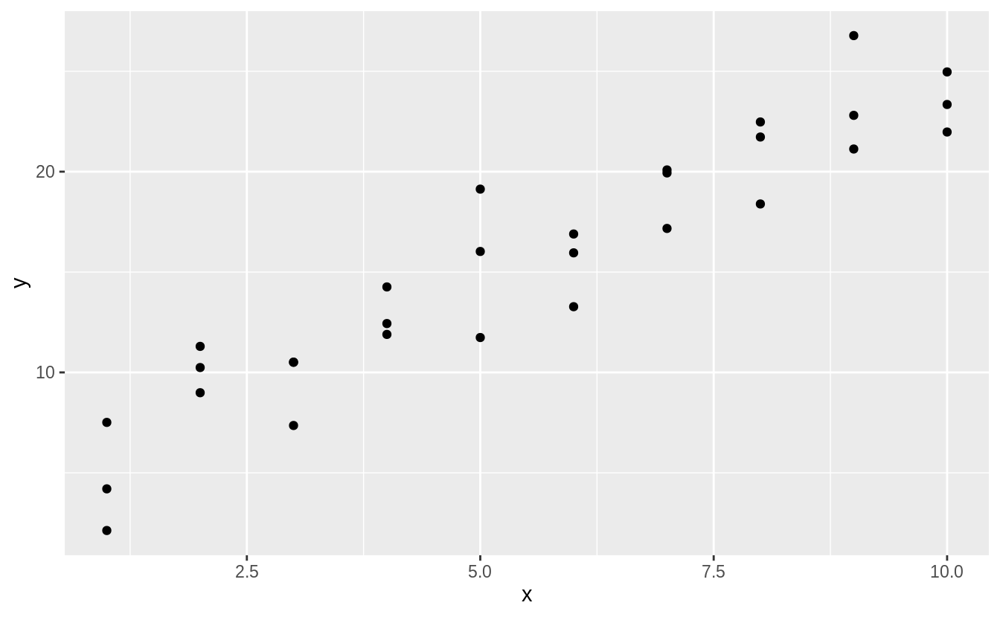
Puedes ver un fuerte patrón en los datos. Usemos un modelo para capturar dicho patrón y hacerlo explícito. Es nuestro trabajo proporcionar la forma básica del modelo. En este caso, la relación parece ser lineal, es decir: y = a_0 + a_1 * x. Comencemos por tener una idea de cómo son los modelos de esa familia generando aleatoriamente unos pocos y superponiéndolos sobre los datos. Para este caso simple, podemos usar geom_abline() que toma una pendiente e intercepto (u ordenada al origen) como parámetros. Más adelante, aprenderemos técnicas más generales que funcionan con cualquier modelo.
modelos <- tibble(
a1 = runif(250, -20, 40),
a2 = runif(250, -5, 5)
)
ggplot(sim1, aes(x, y)) +
geom_abline(aes(intercept = a1, slope = a2), data = modelos, alpha = 1 / 4) +
geom_point()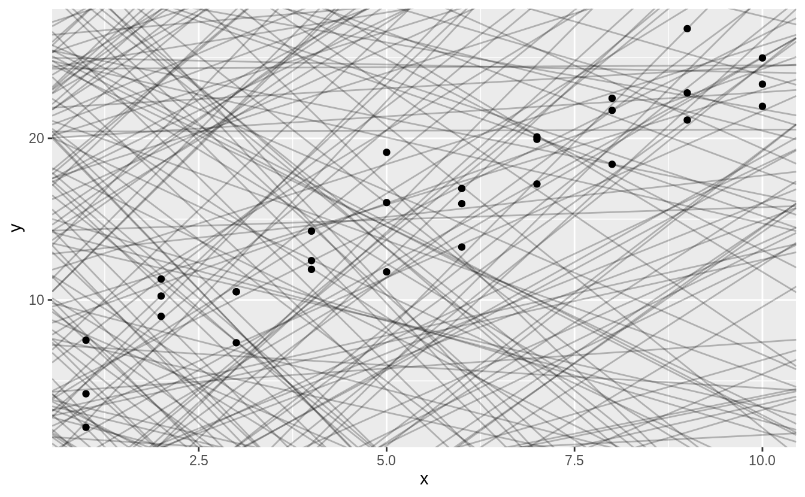
Hay 250 modelos en el gráfico, ¡pero muchos son realmente malos! Necesitamos encontrar los modelos buenos especificando nuestra intuición de que un buen modelo está “cerca” de los datos. Necesitamos una manera de cuantificar la distancia entre los datos y un modelo. Entonces podemos ajustar el modelo encontrando el valor de a_0 ya_1 que genera el modelo con la menor distancia a estos datos.
Un lugar fácil para comenzar es encontrar la distancia vertical entre cada punto y el modelo, como lo muestra el siguiente diagrama. (Nota que he cambiado ligeramente los valores x para que puedas ver las distancias individuales.)
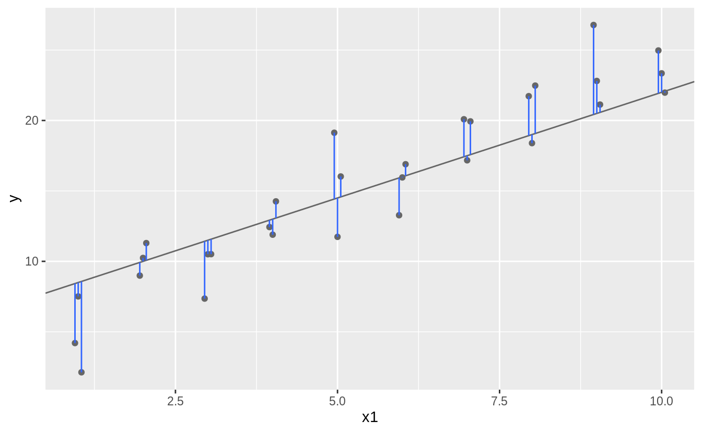
La distancia es solo la diferencia entre el valor dado por el modelo (la predicción), y el valor real y en los datos (la respuesta).
Para calcular esta distancia, primero transformamos nuestra familia de modelos en una función de R. Esta función toma los parámetros del modelo y los datos como inputs, y retorna el valor predicho por el modelo como output:
model1 <- function(a, data) {
a[1] + data$x * a[2]
}
model1(c(7, 1.5), sim1)
#> [1] 8.5 8.5 8.5 10.0 10.0 10.0 11.5 11.5 11.5 13.0 13.0 13.0 14.5 14.5 14.5
#> [16] 16.0 16.0 16.0 17.5 17.5 17.5 19.0 19.0 19.0 20.5 20.5 20.5 22.0 22.0 22.0Luego, necesitaremos calcular la distancia entre lo predicho y los valores reales. En otras palabras, el siguiente gráfico muestra 30 distancias: ¿Cómo las colapsamos en un único número?
Una forma habitual de hacer esto en estadística es usar la “raíz del error cuadrático medio” (del inglés root-mean-squared deviation). Calculamos la diferencia entre los valores reales y los predichos, los elevamos al cuadrado, luego se promedian y tomamos la raíz cuadrada. Esta distancia cuenta con propiedades matemáticas interesantes, pero no nos referiremos a ellas en este capítulo. ¡Tendrás que creer en mi palabra!
measure_distance <- function(mod, data) {
diff <- data$y - model1(mod, data)
sqrt(mean(diff^2))
}
measure_distance(c(7, 1.5), sim1)
#> [1] 2.67Ahora podemos usar purrr para calcular la distancia de todos los modelos definidos anteriormente. Necesitamos una función auxiliar debido a que nuestra función de distancia espera que el modelo sea un vector numérico de longitud 2.
sim1_dist <- function(a1, a2) {
measure_distance(c(a1, a2), sim1)
}
modelos <- modelos %>%
mutate(dist = purrr::map2_dbl(a1, a2, sim1_dist))
modelos
#> # A tibble: 250 x 3
#> a1 a2 dist
#> <dbl> <dbl> <dbl>
#> 1 -15.2 0.0889 30.8
#> 2 30.1 -0.827 13.2
#> 3 16.0 2.27 13.2
#> 4 -10.6 1.38 18.7
#> 5 -19.6 -1.04 41.8
#> 6 7.98 4.59 19.3
#> # … with 244 more rowsA continuación, vamos a superponer los mejores 10 modelos en los datos. He coloreado los modelos usando -dist: esto es una forma fácil de asegurarse de que los mejores modelos (es decir, aquellos con la menor distancia) tengan los colores más brillantes.
ggplot(sim1, aes(x, y)) +
geom_point(size = 2, colour = "grey30") +
geom_abline(
aes(intercept = a1, slope = a2, colour = -dist),
data = filter(modelos, rank(dist) <= 10)
)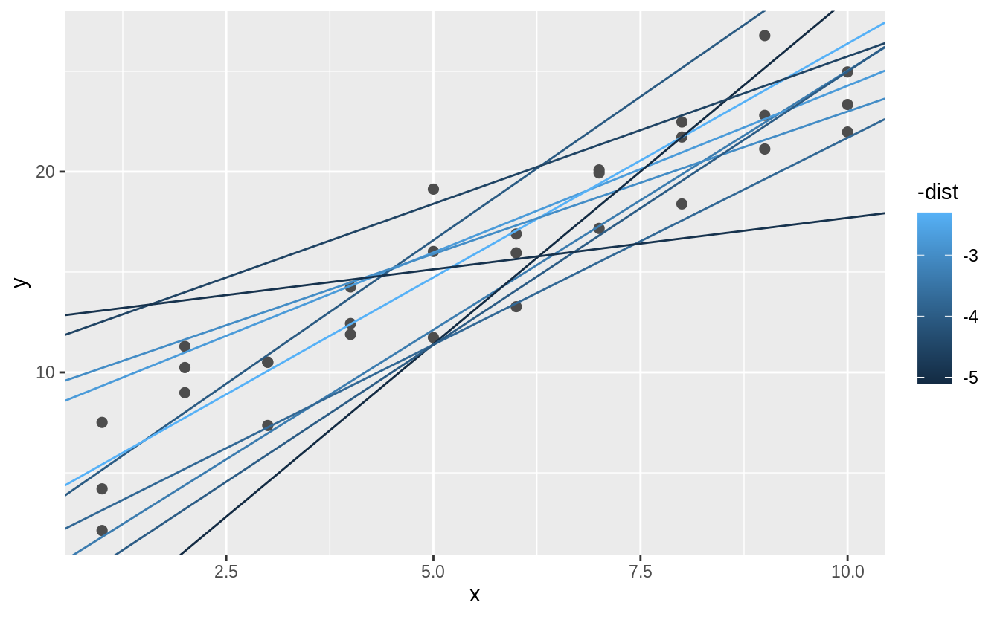
También podemos pensar estos modelos como observaciones y visualizar un diagrama de dispersión (o scatterplot, en inglés) de a1 versus a2, nuevamente coloreado usando -dist. No podremos ver directamente cómo el modelo contrasta con los datos, pero podemos ver muchos modelos a la vez. Nuevamente, he destacado los mejores 10 modelos, esta vez dibujando círculos rojos bajo ellos.
ggplot(modelos, aes(a1, a2)) +
geom_point(data = filter(modelos, rank(dist) <= 10), size = 4, colour = "red") +
geom_point(aes(colour = -dist))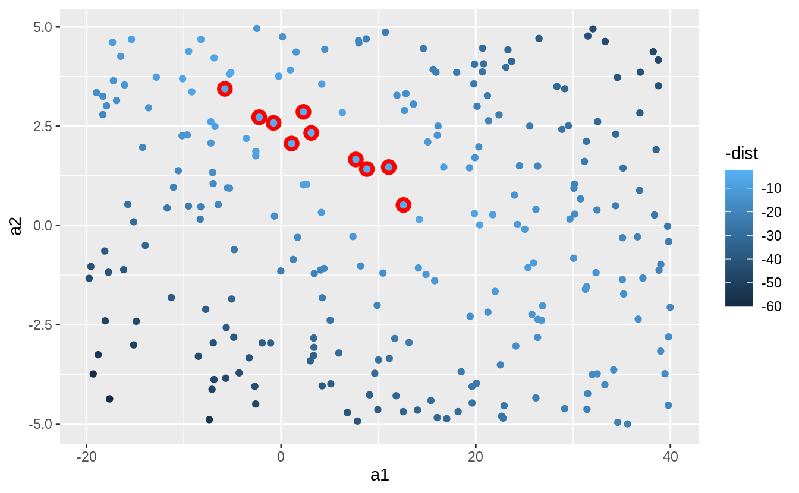
En lugar de probar con múltples modelos aleatorios, se puede sistematizar y generar una cuadrícula de puntos igualmente espaciados (esto se llama búsqueda en cuadrícula). He seleccionado los parámetros de la cuadrícula por aproximación, mirando donde se ubican los mejores modelos en el gráfico anterior.
grid <- expand.grid(
a1 = seq(-5, 20, length = 25),
a2 = seq(1, 3, length = 25)
) %>%
mutate(dist = purrr::map2_dbl(a1, a2, sim1_dist))
grid %>%
ggplot(aes(a1, a2)) +
geom_point(data = filter(grid, rank(dist) <= 10), size = 4, colour = "red") +
geom_point(aes(colour = -dist))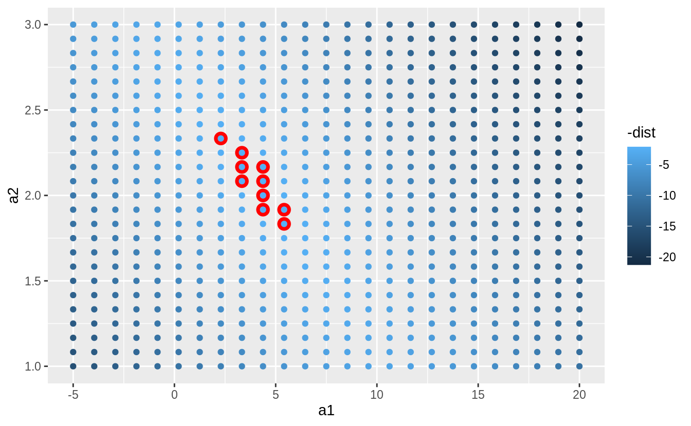
Cuando superpones los mejores 10 modelos en los datos originales, se ven bastante bien:
ggplot(sim1, aes(x, y)) +
geom_point(size = 2, colour = "grey30") +
geom_abline(
aes(intercept = a1, slope = a2, colour = -dist),
data = filter(grid, rank(dist) <= 10)
)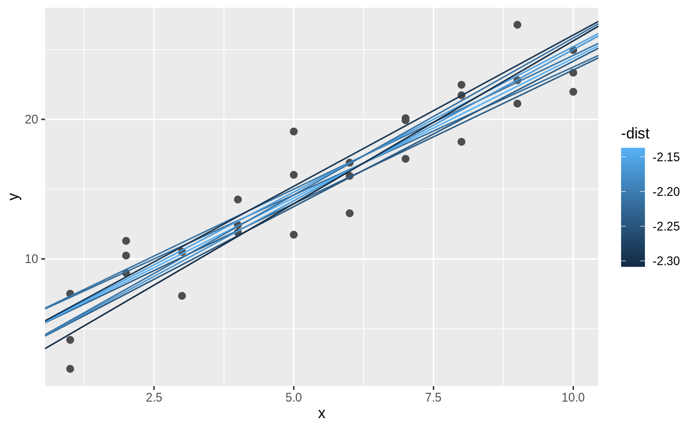
Podrás imaginarte que de forma iterativa puedo hacer la cuadrícula más y más fina hasta reducir los resultados al mejor modelo. Existe una forma mejor de resolver el problema: una herramienta de minimización llamada búsqueda de Newton-Raphson. La intuición detrás de Newton-Raphson es bastante simple: tomas un punto de partida y buscas la pendiente más fuerte en torno a ese punto. Puedes bajar por esa pendiente un poco, para luego repetir el proceso varias veces, hasta que no se puede descender más. En R, esto se puede hacer con la función optim():
best <- optim(c(0, 0), measure_distance, data = sim1)
best$par
#> [1] 4.22 2.05
ggplot(sim1, aes(x, y)) +
geom_point(size = 2, colour = "grey30") +
geom_abline(intercept = best$par[1], slope = best$par[2])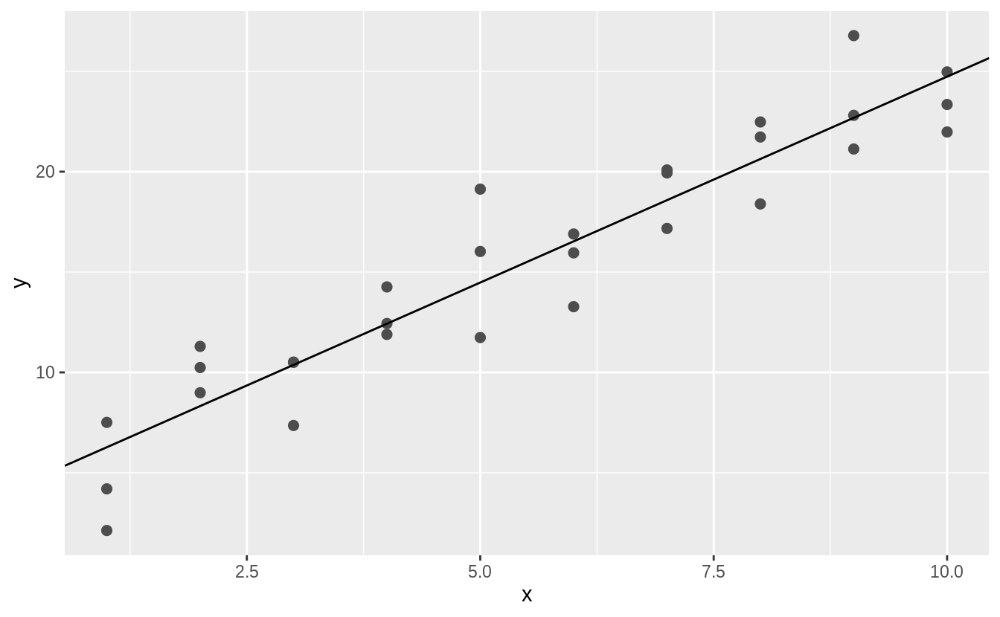
No te preocupes demasiado acerca de los detalles de cómo funciona optim(). La intuición es lo importante en esta parte. Si tienes una función que define la mínima distancia entre un modelo y un conjunto de datos, un algoritmo que pueda minimizar la distancia modificando los parámetros del modelo te permitirá encontrar el mejor modelo. Lo interesante de este enfoque es que funciona con cualquier familia de modelos respecto de la cual se pueda escribir una ecuación que los describa.
Existe otro enfoque que podemos usar para este modelo, debido a que es un caso especial de una familia más amplia: los modelos lineales. Un modelo lineal es de la forma y = a_1 + a_2 * x_1 + a_3 * x_2 + ... + a_n * x_(n+1). Este modelo simple es equivalente a un modelo lineal generalizado en el que n tiene valor 2 y x_1 es x. R cuenta con una herramienta diseñada especialmente para ajustar modelos lineales llamada lm(). lm() tiene un modo especial de especificar la familia del modelo: las fórmulas. Las fórmulas son similares a y ~ x, que lm() traducirá a una función de la forma y = a_1 + a_2 * x. Podemos ajustar el modelo y mirar la salida:
¡Estos son exactamente los mismos valores obtenidos con optim()! Detrás del escenario lm() no usa optim(), sin embargo saca ventaja de la estructura matemática de los modelos lineales. Usando algunas conexiones entre geometría, cálculo y álgebra lineal, lm() encuentra directamente el mejor modelo en un paso, usando un algoritmo sofisticado. Este enfoque es a la vez raṕido y garantiza que existe un mínimo global.
23.2.1 Ejercicios
- Una desventaja del modelo lineal es ser sensible a valores inusuales debido a que la distancia incorpora un término al cuadrado. Ajusta un modelo a los datos simulados que se presentan a continuación y visualiza los resultados. Corre el modelo varias veces para generar diferentes conjuntos de datos simulados. ¿Qué puedes observar respecto del modelo?
- Una forma de obtener un modelo lineal más robusto es usar una métrica distinta para la distancia. Por ejemplo, en lugar de la raíz de la distancia media cuadrática (del inglés root-mean-squared distance) se podría usar la media de la distancia absoluta:
Usa optim() para ajustar este modelo a los datos simulados anteriormente y
compara el resultado con el modelo lineal.
- Un desafío al realizar optimización numérica es que únicamente garantiza encontrar un óptimo local. ¿Qué problema se presenta al optimizar un modelo de tres parámetros como el que se presenta a continuación?
23.3 Visualizando modelos
Para modelos simples, como el presentado anteriormente, puedes descubrir el patrón que captura el modelo si inspeccionas cuidadosamente la familia del modelo y los coeficientes ajustados. Si alguna vez tomaste un curso de modelado estadístico, te será habitual gastar mucho tiempo en esa tarea. Aquí, sin embargo, tomaremos otro camino. Vamos a enfocarnos en entender un modelo mirando las predicciones que genera. Esto tiene una gran ventaja: cada tipo de modelo predictivo realiza predicciones (¿qué otra podría realizar?) de modo que podemos usar el mismo conjunto de técnicas para entender cualquier tipo de modelo predictivo.
También es útil observar lo que el modelo no captura, los llamados residuos que se obtienen restando las predicciones a los datos. Los residuos son poderosos porque nos permiten usar modelos para quitar patrones fuertes y así observar tendencias sutiles que se mantengan luego de quitar los patrones más evidentes.
23.3.1 Predicciones
Para visualizar las predicciones de un modelo, podemos partir por generar una grilla de valores equidistantes que cubra la región donde se encuentran los datos. La forma más fácil de hacerlo es usando modelr::data_grid(). El primer argumento es un data frame y, por cada argumento adicional, encuentra las variables únicas y luego genera todas las combinaciones:
grid <- sim1 %>%
data_grid(x)
grid
#> # A tibble: 10 x 1
#> x
#> <int>
#> 1 1
#> 2 2
#> 3 3
#> 4 4
#> 5 5
#> 6 6
#> # … with 4 more rows(Esto será más interesante cuando se agreguen más variables al modelo.)
Luego agregamos las predicciones. Usaremos modelr::add_predictions() que toma un data frame y un modelo. Esto agrega las predicciones del modelo en una nueva columna en el data frame:
grid <- grid %>%
add_predictions(sim1_mod)
grid
#> # A tibble: 10 x 2
#> x pred
#> <int> <dbl>
#> 1 1 6.27
#> 2 2 8.32
#> 3 3 10.4
#> 4 4 12.4
#> 5 5 14.5
#> 6 6 16.5
#> # … with 4 more rows(También puedes usar esta función para agregar prediccionees al conjunto de datos original.)
A continuación, graficamos las predicciones. Te preguntarás acerca de todo este trabajo adicional en comparación a usar geom_abline(). Pero la ventaja de este enfoque es que funciona con cualquier modelo en R, desde los más simples a los más complejos. La única limitante son tus habilidades de visualización. Para más ideas respecto de como visualizar modelos complejos, puedes consultar http://vita.had.co.nz/papers/model-vis.html.
ggplot(sim1, aes(x)) +
geom_point(aes(y = y)) +
geom_line(aes(y = pred), data = grid, colour = "red", size = 1)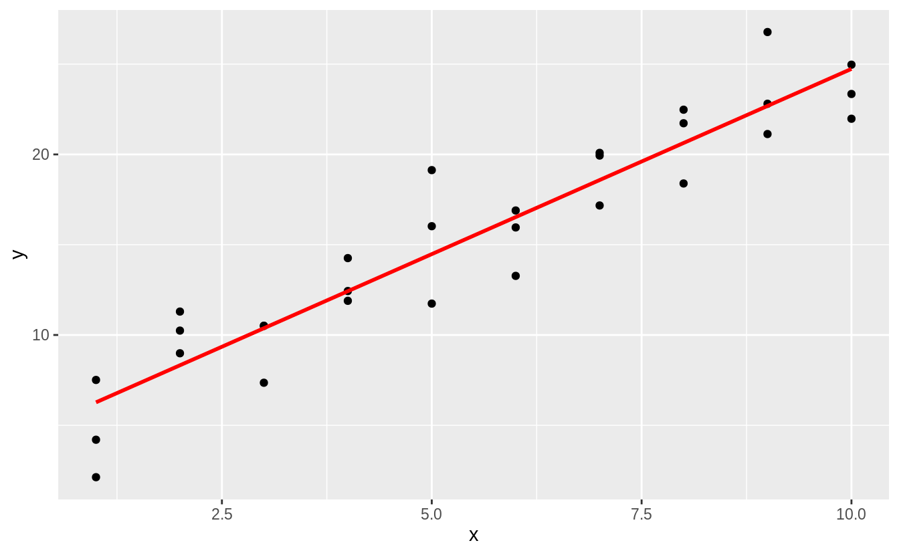
23.3.2 Residuos
La otra cara de las predicciones son los residuos. Las predicciones te informan de los patrones que el modelo captura y los residuos te dicen lo que el modelo ignora. Los residuos son las distancias entre lo observado y los valores predichos que calculamos anteriormente.
Agregamos los residuos a los datos con add_residuals(), que funciona de manera similar a add_predictions(). Nota, sin embargo, que usamos el data frame original y no no una grilla manufacturada. Esto es porque para calcular los residuos se necesitan los valores de “y”.
sim1 <- sim1 %>%
add_residuals(sim1_mod)
sim1
#> # A tibble: 30 x 3
#> x y resid
#> <int> <dbl> <dbl>
#> 1 1 4.20 -2.07
#> 2 1 7.51 1.24
#> 3 1 2.13 -4.15
#> 4 2 8.99 0.665
#> 5 2 10.2 1.92
#> 6 2 11.3 2.97
#> # … with 24 more rowsExisten diferentes formas de entender qué nos dicen los residuos respecto del modelo. Una forma es dibujar un polígono de frecuencia que nos ayude a entender cómo se propagan los residuos:
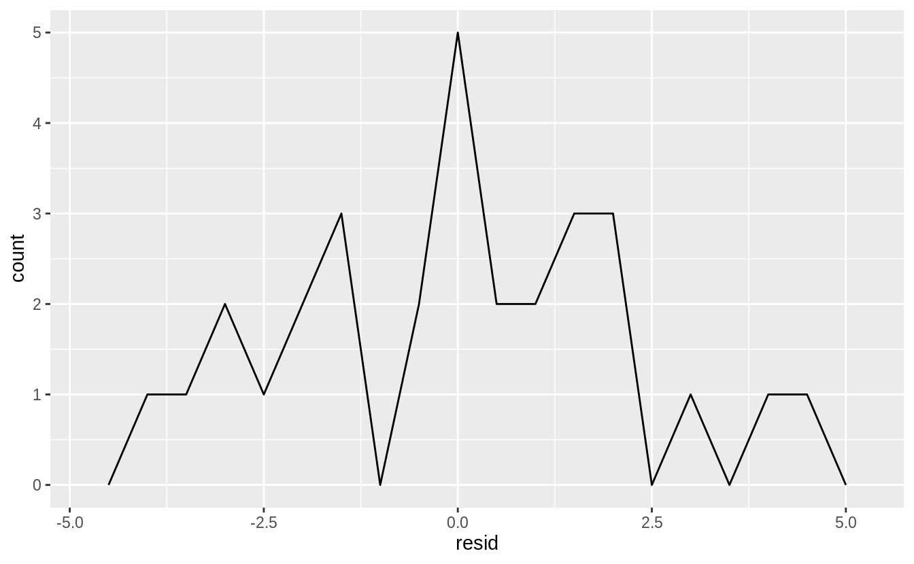
Esto ayuda a calibrar la calidad del modelo: ¿qué tan lejos se encuentran las predicciones de los valores observados? Nota que el promedio del residuo es siempre cero.
A menudo vas a querer crear gráficos usando los residuos en lugar del predictor original. Verás mucho de eso en el capítulo siguiente:
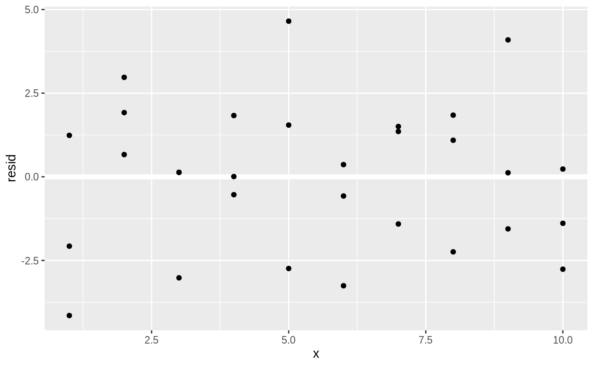
Esto parece ser ruido aleatorio, lo que sugiere que el modelo ha hecho un buen trabajo capturando los patrones del conjunto de datos.
23.3.3 Ejercicios
En lugar de usar
lm()para ajustar una línea recta, puedes usarloess()para ajustar una curva suave. Repite el proceso de ajustar el modelo, generar la cuadrícula, predicciones y visualización consim1usandoloess()en vez delm(). ¿Cómo se compara el resultado ageom_smooth().add_predictions()está pareada congather_predictions()yspread_predictions(). ¿Cómo difieren estas tres funciones?¿Qué hace
geom_ref_line()? ¿De qué paquete proviene? ¿Por qué es útil e importante incluir una línea de referencia en los gráficos que muestran residuos?¿Por qué quisieras mirar un polígono de frecuencias con los residuos absolutos? ¿Cuáles son las ventajas y desventajas de los residuos crudos?
23.4 Fórmulas y familias de modelos
Ya habrás visto fórmulas anteriormente cuando usamos facet_wrap() y facet_grid(). En R, las fórmulas proveen un modo general de obtener “comportamientos especiales”. En lugar de evaluar los valores de las variables directamente, se capturan los valores para que sean interpretados por una función.
La mayoría de los las funciones de modelado en R usan una conversión estándar para las fórmulas y las funciones. Ya habrás visto una conversión simple y ~ x que se convierte en y = a_1 + a_2 * x. Si quieres ver lo que hace R, puedes usar la función model_matrix(). Esta toma un data frame y una fórmula para entregar un tibble que define la ecuación del modelo: cada columna en la salida está asociada con un coeficiente del modelo, la función es siempre y = a_1 * salida_1 + a_2 * salida_2. Para el caso simple y ~ x1 esto nos muestra algo interesante:
df <- tribble(
~y, ~x1, ~x2,
4, 2, 5,
5, 1, 6
)
model_matrix(df, y ~ x1)
#> # A tibble: 2 x 2
#> `(Intercept)` x1
#> <dbl> <dbl>
#> 1 1 2
#> 2 1 1La forma en que R agrega el intercepto (u ordenada al origen) al modelo es mediante una columna de unos. Por defecto, R siempre agregará esta columna. Si no quieres esto, necesitas excluirla explícitamente usando -1:
La matriz del modelo crece de manera nada sorprendente si incluyes más variables al modelo:
model_matrix(df, y ~ x1 + x2)
#> # A tibble: 2 x 3
#> `(Intercept)` x1 x2
#> <dbl> <dbl> <dbl>
#> 1 1 2 5
#> 2 1 1 6Esta notación para las fórmulas a veces se le llama “notación de Wilkinson-Rogers”, la cual fue descrita inicialmente en Symbolic Description of Factorial Models for Analysis of Variance, escrito por G. N. Wilkinson y C. E. Rogers https://www.jstor.org/stable/2346786. Es conveniente excavar un poco y leer el artículo original si quieres entender los detalles del álgebra de modelado.
Las siguientes secciones detallan cómo esta notación de fórmulas funciona con variables categóricas, interacciones y transformaciones.
23.4.1 Variables categóricas
Generar una función a partir de una fórmula es directo cuando el predictor es una variable continua, pero las cosas son más complicadas cuando el predictor es una variable categórica. Imagina que tienes una fórmula como y ~ sexo, donde el sexo puede ser hombre o mujer. No tiene sentido convertir a una fórmula del tipo y = x_0 + x_1 * sexo debido a que sexo no es un número - ¡no se puede multiplicar! En su lugar, lo que R hace es convertir a y = x_0 + x_1 * sexo_hombre donde sexo_hombre tiene valor 1 si sexo corresponde a hombre y cero a mujer:
df <- tribble(
~genero, ~respuesta,
"masculino", 1,
"femenino", 2,
"masculino", 1
)
model_matrix(df, respuesta ~ genero)
#> # A tibble: 3 x 2
#> `(Intercept)` generomasculino
#> <dbl> <dbl>
#> 1 1 1
#> 2 1 0
#> 3 1 1Quizá te preguntes por qué R no crea la columna generofemenino. El problema es que eso crearía una columna perfectamente predecible a partir de las otras columnas (es decir, generofemenino = 1 - generomasculino). Desafortunadamete los detalles exactos de por qué esto es un problema van más allá del alcance del libro, pero básicamente crea una familia de modelos que es muy flexible y genera infinitos modelos igualmente cercanos a los datos.
Afortunadamente, sin embargo, si te enfocas en visualizar las predicciones no necesitas preocuparte de la parametrización exacta. Veamos algunos datos y modelos para hacer algo concreto. Aquí está el dataset sim2 de modelr:
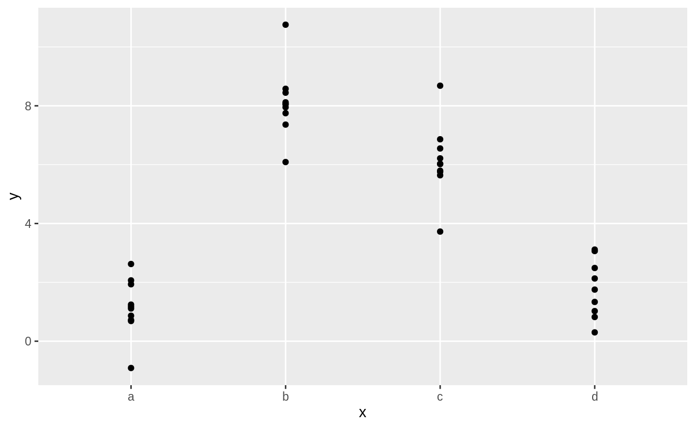
Podemos ajustar un modelo a esto y generar predicciones:
mod2 <- lm(y ~ x, data = sim2)
grid <- sim2 %>%
data_grid(x) %>%
add_predictions(mod2)
grid
#> # A tibble: 4 x 2
#> x pred
#> <chr> <dbl>
#> 1 a 1.15
#> 2 b 8.12
#> 3 c 6.13
#> 4 d 1.91Efectivamente, un modelo con una variable x categórica va a predecir el valor medio para cada categoría. (¿Por qué? porque la media minimiza la raíz de la distancia media cuadrática.) Es fácil de ver si superponemos la predicción sobre los datos originales:
ggplot(sim2, aes(x)) +
geom_point(aes(y = y)) +
geom_point(data = grid, aes(y = pred), colour = "red", size = 4)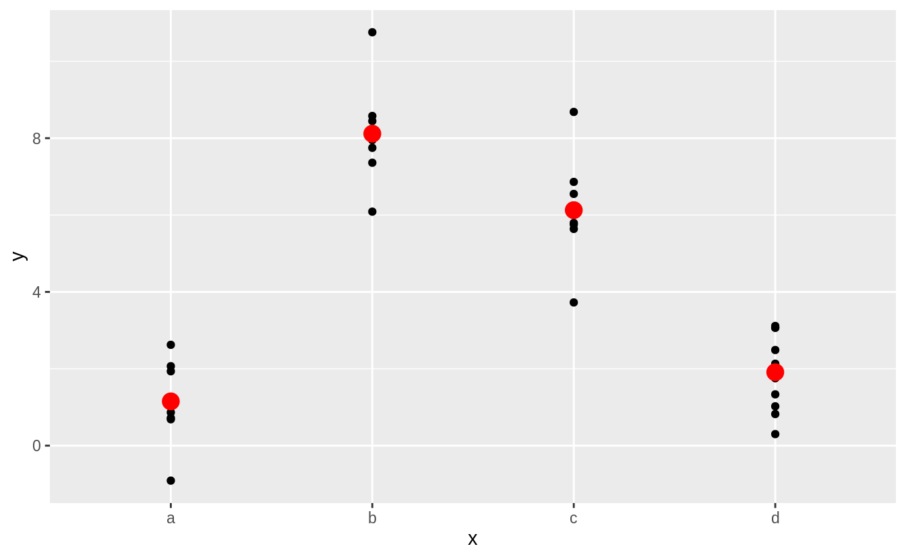
No es posible hacer predicciones sobre niveles no observados. A veces harás esto por accidente, por lo que es bueno reconocer el siguiente mensaje de error:
23.4.2 Interacciones (continuas y categóricas)
¿Qué ocurre si combinas una variable continua y una categórica? sim3 contiene un predictor categórico y otro predictor continuo. Podemos visualizarlos con un gráfico simple:
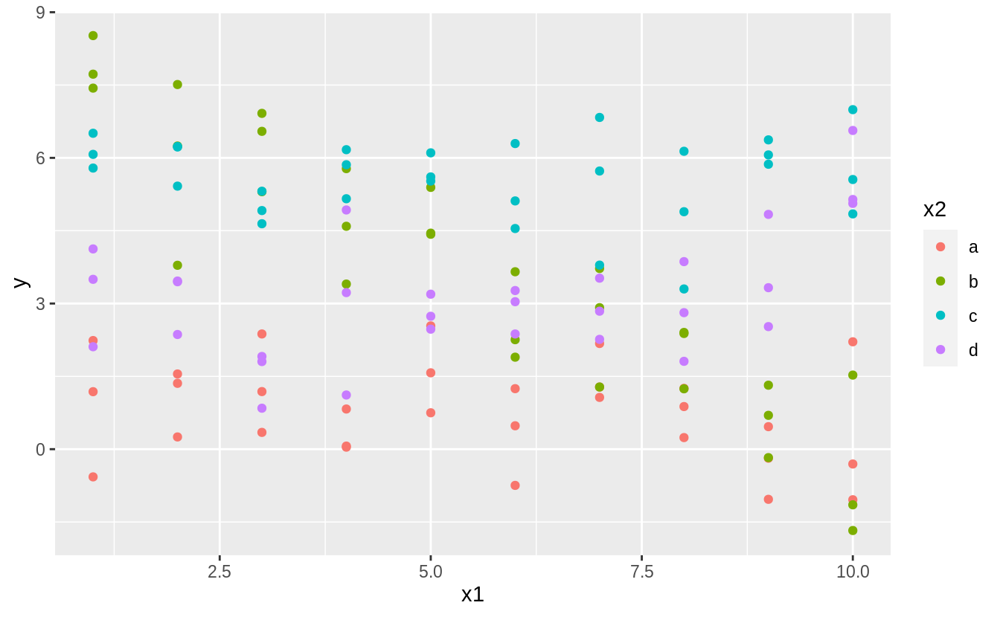
Existen dos posibles modelos que se pueden ajustar a estos datos:
Cuando agregas variables con + el modelo va a estimar cada efecto independientemente de los demás. Es posible agregar al ajuste lo que se conoce como interacción usando *. Por ejemplo, y ~ x1 * x2 se traduce en y = a_0 + a_1 * x_1 + a_2 * x_2 + a_12 * x_1 * x_2. Observa que si usas *, tanto el efecto interacción como los efectos individuales se incluyen en el modelo.
Para visualizar estos modelos necesitamos dos nuevos trucos:
Tenemos dos predictores, por lo que necesitamos pasar ambas variables a
data_grid(). Esto encontrará todos los valores únicos dex1yx2y luego generará todas las combinaciones,Para generar predicciones de ambos modelos simultáneamente, podemos usar
gather_predictions()que incorpora cada predicción como una fila. El complemento degather_predictions()esspread_predictions()que incluye cada predicción en una nueva columna.
Esto combinado nos da:
grid <- sim3 %>%
data_grid(x1, x2) %>%
gather_predictions(mod1, mod2)
grid
#> # A tibble: 80 x 4
#> model x1 x2 pred
#> <chr> <int> <fct> <dbl>
#> 1 mod1 1 a 1.67
#> 2 mod1 1 b 4.56
#> 3 mod1 1 c 6.48
#> 4 mod1 1 d 4.03
#> 5 mod1 2 a 1.48
#> 6 mod1 2 b 4.37
#> # … with 74 more rowsPodemos visualizar los resultados de ambos modelos en un gráfico usando separando en facetas:
ggplot(sim3, aes(x1, y, colour = x2)) +
geom_point() +
geom_line(data = grid, aes(y = pred)) +
facet_wrap(~model)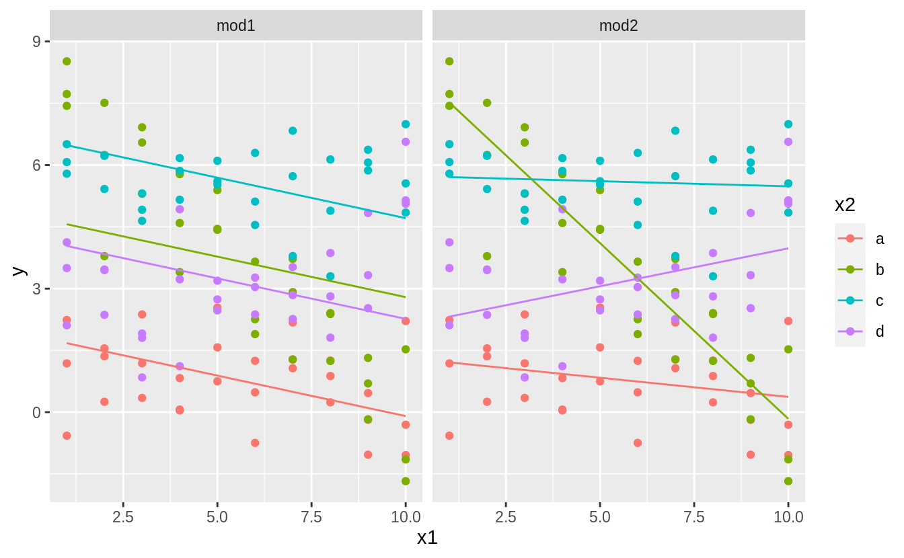
Observa que el modelo que usa + tiene la misma pendiente para cada recta, pero distintos interceptos (u ordenadas al origen). El modelo que usa * tiene distinta pendiente e intercepto.
¿Qué modelo es el más adecuado para los datos? Podemos mirar los residuos. Aquí hemos separado facetas por modelo y por x2ya que facilita ver el patrón dentro de cada grupo.
sim3 <- sim3 %>%
gather_residuals(mod1, mod2)
ggplot(sim3, aes(x1, resid, colour = x2)) +
geom_point() +
facet_grid(model ~ x2)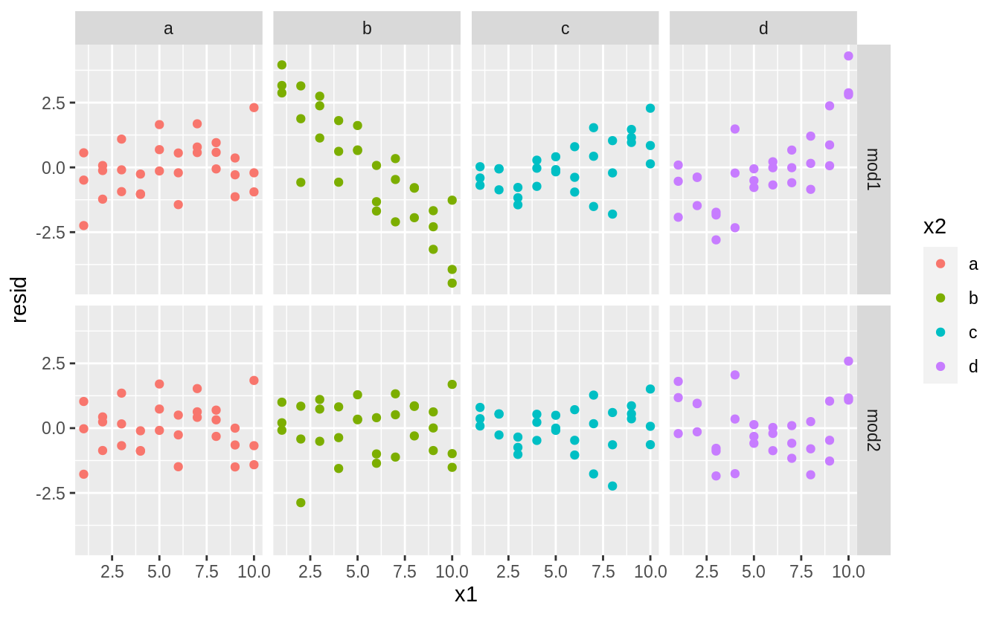
Existe un patrón poco obvio en los residuos de mod2. Los residuos de mod1 muestran que el modelo tiene algunos patrones ignorados en b, y un poco menos ignorados en c y d. Quizá te preguntas si existe una forma precisa de determinar si acaso mod1 o mod2 es mejor. Existe, pero requiere un respaldo matemático fuerte y no nos preocuparemos de eso. Lo que aquí interesa es evaluar cualitativamente si el modelo ha capturado los patrones que nos interesan.
23.4.3 Interacciones (dos variables continuas)
Demos un vistazo al modelo equivalente para dos variables continuas. Para comenzar, se procede de igual modo que el ejemplo anterior:
mod1 <- lm(y ~ x1 + x2, data = sim4)
mod2 <- lm(y ~ x1 * x2, data = sim4)
grid <- sim4 %>%
data_grid(
x1 = seq_range(x1, 5),
x2 = seq_range(x2, 5)
) %>%
gather_predictions(mod1, mod2)
grid
#> # A tibble: 50 x 4
#> model x1 x2 pred
#> <chr> <dbl> <dbl> <dbl>
#> 1 mod1 -1 -1 0.996
#> 2 mod1 -1 -0.5 -0.395
#> 3 mod1 -1 0 -1.79
#> 4 mod1 -1 0.5 -3.18
#> 5 mod1 -1 1 -4.57
#> 6 mod1 -0.5 -1 1.91
#> # … with 44 more rowsObserva el uso de seq_range() dentro de data_grid(). En lugar de usar cada valor único de x, usamos una cuadrícula uniformemente espaciada de cinco valores entre los números mínimo y máximo. Quizá no es lo más importante aquí, pero es una técnica útil en general. Existen otros dos argumentos en seq_range():
pretty = TRUEgenerará una secuencia “bonita”, por ejemplo algo agradable al ojo humano. Esto es útil si quieres generar tablas a partir del output:
seq_range(c(0.0123, 0.923423), n = 5)
#> [1] 0.0123 0.2401 0.4679 0.6956 0.9234
seq_range(c(0.0123, 0.923423), n = 5, pretty = TRUE)
#> [1] 0.0 0.2 0.4 0.6 0.8 1.0trim = 0.1eliminará el 10% de los valores en el extremo de la cola. Esto es útil si las variables tienen una distribución con una cola larga y te quieres enfocar en generar valores cerca del centro:
x1 <- rcauchy(100)
seq_range(x1, n = 5)
#> [1] -115.9 -83.5 -51.2 -18.8 13.5
seq_range(x1, n = 5, trim = 0.10)
#> [1] -13.84 -8.71 -3.58 1.55 6.68
seq_range(x1, n = 5, trim = 0.25)
#> [1] -2.1735 -1.0594 0.0547 1.1687 2.2828
seq_range(x1, n = 5, trim = 0.50)
#> [1] -0.725 -0.268 0.189 0.647 1.104expand = 0.1es en cierta medida el opuesto detrim()ya que expande el rango en un 10%.
x2 <- c(0, 1)
seq_range(x2, n = 5)
#> [1] 0.00 0.25 0.50 0.75 1.00
seq_range(x2, n = 5, expand = 0.10)
#> [1] -0.050 0.225 0.500 0.775 1.050
seq_range(x2, n = 5, expand = 0.25)
#> [1] -0.125 0.188 0.500 0.812 1.125
seq_range(x2, n = 5, expand = 0.50)
#> [1] -0.250 0.125 0.500 0.875 1.250A continuación intentemos visualizar el modelo. Tenemos dos predictores continuos, por lo que te imaginarás el modelo como una superficie 3d. Podemos mostrar esto usando geom_tile():
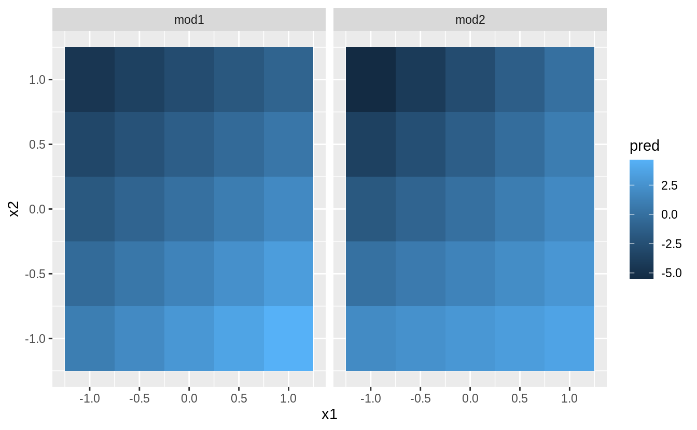
¡Esto no sugiere que los modelos sean muy distintos! Pero eso es en parte una ilusión: nuestros ojos y cerebros no son muy buenos en comparar sombras de color de forma adecuada. En lugar de mirar la superficie desde arriba, podríamos mirarla desde los costados, mostrando múltiples cortes:
ggplot(grid, aes(x1, pred, colour = x2, group = x2)) +
geom_line() +
facet_wrap(~model)
ggplot(grid, aes(x2, pred, colour = x1, group = x1)) +
geom_line() +
facet_wrap(~model)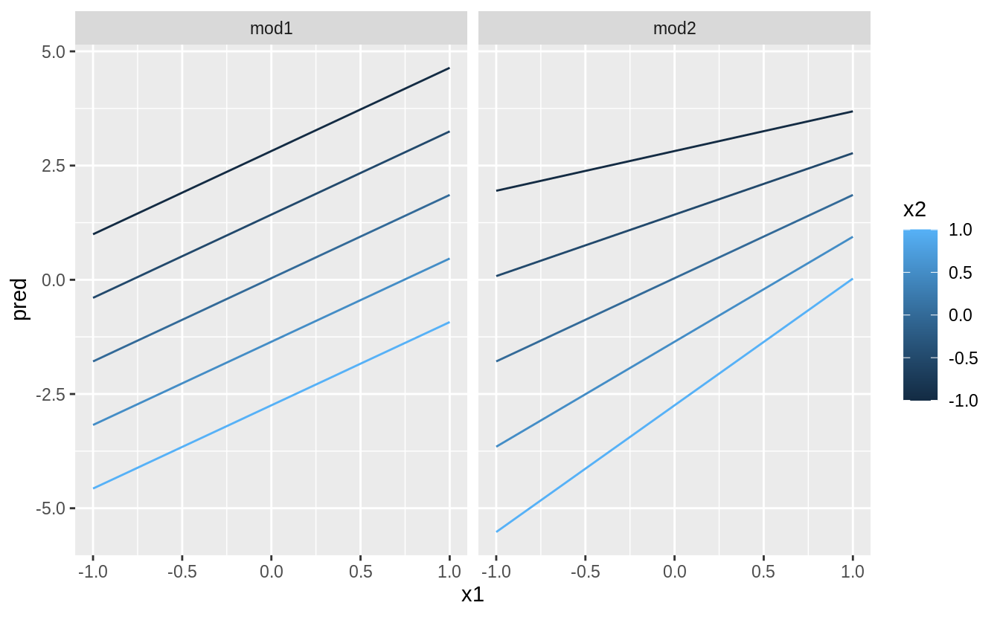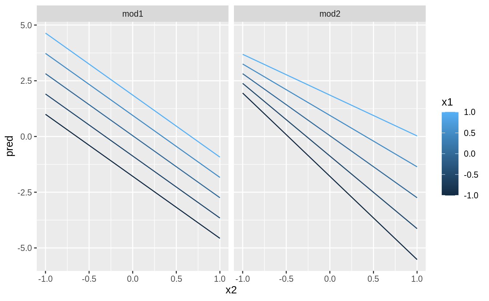
Esto muestra la interacción entre dos variables continuas que básicamente opera del mismo modo que una variable continua y una categórica. Una interacción dice que no existe un resultado fijo: necesitas considerar los valores de x1 y x2 simultáneamente para predecir y.
Podrás ver que con apenas dos variables continuas, obtener un buen resultado de visualización es difícil. Pero esto es razonable: ¡no deberías esperar que con tres o más variables sea más fácil entender la interacción! Nuevamente, estamos parcialmente a salvo porque estamos usando modelos para la exploración y crearás tus propios modelos en el tiempo. El modelo no debe ser perfecto, tiene que ayudar a revelar información acerca de los datos.
Pasé un tiempo mirando los residuos para ver si acaso mod2 es mejor que mod1. Creo que lo es, pero es algo sutil. Tendrás la oportunidad de explorar esto en los ejercicios.
23.4.4 Transformaciones
Puedes hacer transformaciones dentro de la fórmula del modelo. Por ejemplo log(y) ~ sqrt(x1) + x2 se transforma en log(y) = a_1 + a_2 * sqrt(x1) + a_3 * x2. Si la transformación involucra +, *, ^ o -, necesitas dejar eso dentro de I() para que R no lo tome como parte de la especificación del modelo. Por ejemplo, y ~ x + I(x ^ 2) se traduce en y = a_1 + a_2 * x + a_3 * x^2. Si olvidas incluir I() y especificas y ~ x ^ 2 + x, R va a calcular y ~ x * x + x. x * x lo que resulta en la interacción de x consigo misma, lo que se reduce a x. R automáticamente elimina las variables redundantes, por lo que x + x se convierte en x, lo que significa que y ~ x ^ 2 + x especifica la función y = a_1 + a_2 * x. ¡Eso probablemente no es lo que querías!
Nuevamente, si te confunde lo que el modelo hace, puedes usar model_matrix() para ver exactamente lo que la ecuación lm() está ajustando:
df <- tribble(
~y, ~x,
1, 1,
2, 2,
3, 3
)
model_matrix(df, y ~ x^2 + x)
#> # A tibble: 3 x 2
#> `(Intercept)` x
#> <dbl> <dbl>
#> 1 1 1
#> 2 1 2
#> 3 1 3
model_matrix(df, y ~ I(x^2) + x)
#> # A tibble: 3 x 3
#> `(Intercept)` `I(x^2)` x
#> <dbl> <dbl> <dbl>
#> 1 1 1 1
#> 2 1 4 2
#> 3 1 9 3Las transformaciones son útiles porque puedes aproximar funciones no lineales. Si tuviste clases de cálculo, habrás escuchado acerca del teorema de Taylor que dice que puedes aproximar una función suave como la suma de infinitos polinomios. Esto significa que puedes usar una función polinomial para acercarte a una distancia arbitrariamente pequeña de una función suave ajustando una ecuación como y = a_1 + a_2 * x + a_3 * x^2 + a_4 * x^3. Escribir esta secuencia a mano es tedioso, pero R provee la función auxiliar poly():
model_matrix(df, y ~ poly(x, 2))
#> # A tibble: 3 x 3
#> `(Intercept)` `poly(x, 2)1` `poly(x, 2)2`
#> <dbl> <dbl> <dbl>
#> 1 1 -7.07e- 1 0.408
#> 2 1 -7.85e-17 -0.816
#> 3 1 7.07e- 1 0.408Sin embargo, existe un problema mayor al usar poly(): fuera del rango de los datos, los polinomios rápidamente se disparan a infinito positivo o negativo. Una alternativa más segura es usar spline natural, splines::ns().
library(splines)
model_matrix(df, y ~ ns(x, 2))
#> # A tibble: 3 x 3
#> `(Intercept)` `ns(x, 2)1` `ns(x, 2)2`
#> <dbl> <dbl> <dbl>
#> 1 1 0 0
#> 2 1 0.566 -0.211
#> 3 1 0.344 0.771Veamos esto cuando intentamos aproximar una función no lineal:
sim5 <- tibble(
x = seq(0, 3.5 * pi, length = 50),
y = 4 * sin(x) + rnorm(length(x))
)
ggplot(sim5, aes(x, y)) +
geom_point()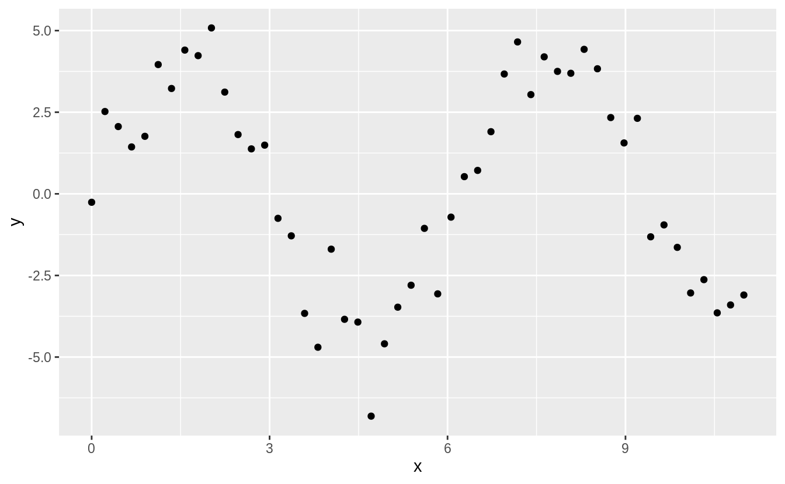
Voy a ajustar cinco modelos a los datos.
mod1 <- lm(y ~ splines::ns(x, 1), data = sim5)
mod2 <- lm(y ~ splines::ns(x, 2), data = sim5)
mod3 <- lm(y ~ splines::ns(x, 3), data = sim5)
mod4 <- lm(y ~ splines::ns(x, 4), data = sim5)
mod5 <- lm(y ~ splines::ns(x, 5), data = sim5)
grid <- sim5 %>%
data_grid(x = seq_range(x, n = 50, expand = 0.1)) %>%
gather_predictions(mod1, mod2, mod3, mod4, mod5, .pred = "y")
ggplot(sim5, aes(x, y)) +
geom_point() +
geom_line(data = grid, colour = "red") +
facet_wrap(~model)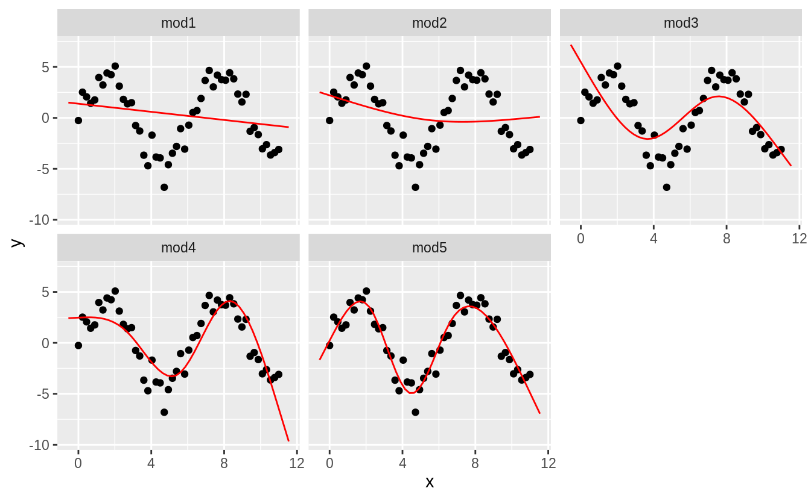
Observa que la extrapolación fuera del rango de los datos es claramente mala. Esta es la desventaja de aproximar una función mediante un polinomio. Pero este es un problema real con cualquier modelo: el modelo nunca te dirá si el comportamiento es verdadero cuando extrapolas fuera del rango de los datos que has observado. Deberás apoyarte en la teoría y la ciencia.
23.4.5 Ejercicios
¿Qué pasa si repites el análisis de
sim2usando un modelo sin intercepto? ¿Qué ocurre con la ecuación del modelo? ¿Qué ocurre con las predicciones?Usa
model_matrix()para explorar las ecuaciones generadas por los modelos ajustados asim3ysim4. ¿Por qué*es un atajo para la interacción?Usando los principios básicos, convierte las fórmulas de los siguientes modelos en funciones. (Sugerencia: comienza por convertir las variables categóricas en ceros y unos.)
- Para
sim4, ¿Es mejormod1omod2? Yo creo quemod2es ligeramente mejor removiendo las tendencias, pero es bastante sutil. ¿Puedes generar un gráfico que de sustento a esta hipótesis?
23.5 Valores faltantes
Los valores faltantes obviamente no proporcionan información respecto de la relación entre las variables, por lo que modelar funciones va a eliminar todas las filas con valores faltantes. R por defecto lo hace de forma silenciosa, pero options(na.action = na.warn) (ejecutado en los prerrequisitos) asegura que la salida incluya una advertencia.
df <- tribble(
~x, ~y,
1, 2.2,
2, NA,
3, 3.5,
4, 8.3,
NA, 10
)
mod <- lm(y ~ x, data = df)
#> Warning: Dropping 2 rows with missing valuesPara suprimir los mensajes de advertencia, incluye na.action = na.exclude:
Siempre puedes consultar cuántas observaciones se usaron con nobs():
23.6 Otras familias de modelos
Este capítulo se centró de forma exclusiva en la familia de modelos lineales, la cual asume una relación de la forma y = a_1 * x1 + a_2 * x2 + ... + a_n * xn. Además, los modelos lineales asumen que los residuos siguen una distribución normal, algo de lo que no hemos hablado. Existe un amplio conjunto de familias de modelos que extienden la familia de modelos lineales de varias formas interesantes. Algunos son:
Modelos lineales generalizados, es decir,
stats::glm(). Los modelos lineales asumen que la respuesta es una variable continua y que el error sigue una distribución normal. Los modelos lineales generalizados extienden los modelos lineales para incluir respuestas no continuas (es decir, datos binarios o conteos). Definen una distancia métrica basada en la idea estadística de verosimilitud.Modelos generalizados aditivos, es decir,
mgcv::gam(), extienden los modelos lineales generalizados para incorporar funciones suaves arbitrarias. Esto significa que puedes escribir una fórmula del tipoy ~ s(x)que se transforma en una ecuación de la formay = f(x)y dejar quegam()estime la función (sujeto a algunas restricciones de suavidad para que el problema sea manejable).Modelos lineales penalizados, es decir,
glmnet::glmnet(), incorporan un término de penalización a la distancia y así penalizan modelos complejos (definidos por la distancia entre el vector de parámetros y el origen). Esto tiende a entregar modelos que generalizan mejor respecto de nuevos conjuntos de datos para la misma población.Modelos lineales robustos, es decir,
MASS:rlm(), modifican la distancia para restar importancia a los puntos que quedan muy alejados. Esto resulta en modelos menos sensibles a valores extremos, con el inconveniente de que no son muy buenos cuando no hay valores extremos.Árboles, es decir,
rpart::rpart(), atacan un problema de un modo totalmente distinto a los modelos lineales. Ajustan un modelo constante por partes, dividiendo los datos en partes progresivamente más y más pequeñas. Los árboles no son tremendamente efectivos por sí solos, pero son muy poderosos cuando se usan en modelos agregados como bosques aleatorios, del inglés random forests), (es decir,randomForest::randomForest()) o máquinas aceleradoras de gradiente, del inglés gradient boosting machines (es decir,xgboost::xgboost.).
Estos modelos son todos similares desde una perspectiva de programación. Una vez que hayas manejado los modelos lineales, te resultará sencillo entender la mecánica de otras clases de modelos. Ser un modelador hábil consiste en tener buenos principios generales y una gran caja de herramientas técnicas. Ahora que has aprendido algunas herramientas y algunas clases de modelos, puedes continuar aprendiendo sobre otras clases en otras fuentes.